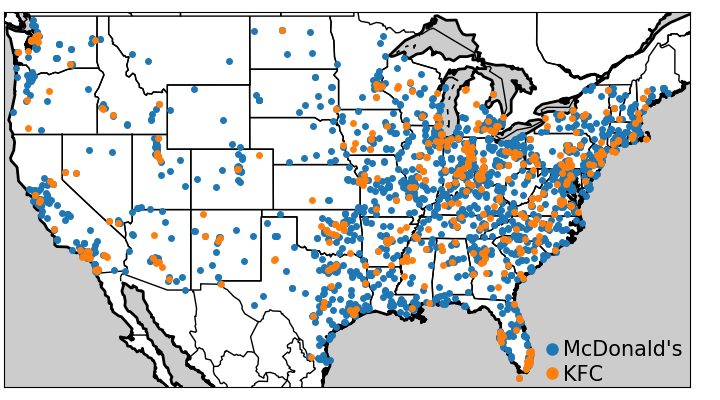
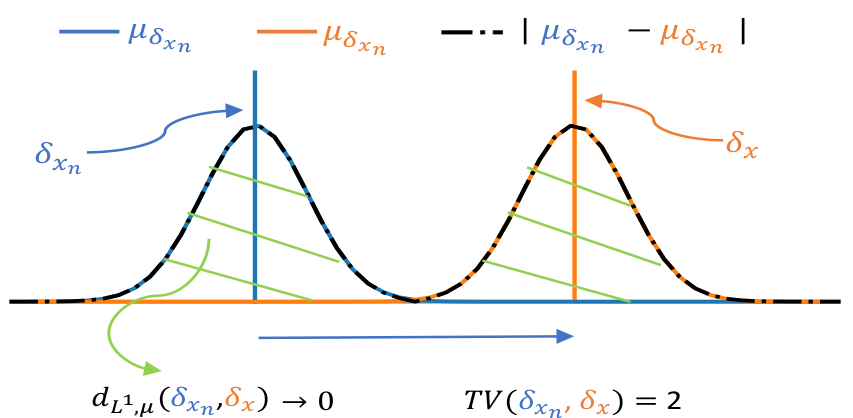
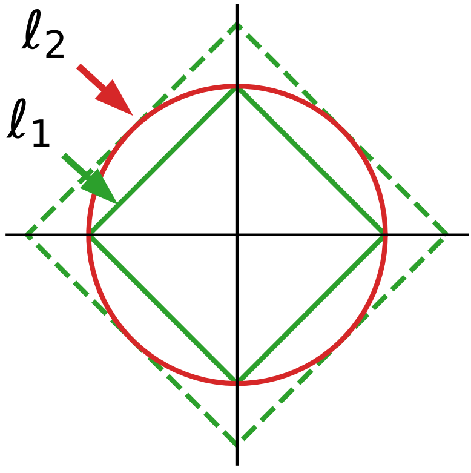

Note
Given two set of observations, are they drawn from the same distribution? Our paper Comparing distributions: l1 geometry improves kernel two-sample testing at the NeurIPS 2019 conference revisits this classic statistical problem known as “two-sample testing”.
This post explains the context and the paper with a bit of hand waiving.
Contents
The context: two-sample testing
Given two samples from two unknown populations, the goal of two-sample tests is to determine whether the underlying populations differ with a statistical significance. For instance, we may care to know whether the McDonald’s and KFC use different logic to chose locations of restaurants across the US. This is a difficult question: we have access to data points, but not the underlying generative mechanism, that is probably governed by marketing strategies.
From kernel mean embeddings to distances on distributions
In the example of spatial distributions restaurants, there is a lot of information in how close observed data points lie in the original measurement space (here geographic coordinates). Kernel methods arise naturally to capture this information. They can be applied to distributions, building representatives of distributions: Kernel embeddings of distributions. The mean embedding of a distribution P with a kernel k is written:
μP(t) : = ⌠⌡ℝdk(x, t)dP(x)
Intuitively, it is related to Kernel Density Estimates (KDEs) which estimate a density in continuous space by smoothing the observed data points with a kernel.

Kernel mean embeddings for two distributions of points
For two-sample testing, kernel embeddings can be used to compute distances between distributions, building metrics over the space of probability measures. Metrics between probability measures can be defined via the notion of Integral Probability Metric (IPM): as a difference of expectations:
IPM[F, P, Q] : = supf ∈ F(𝔼x ~ P[f(x)] − 𝔼y ~ Q[f(y)])
where F is a class of functions. This definition is appealing because it characterizes the difference between P and Q by the function for which the expectancy differs most. The specific choice of class of function defines the metric. If we now consider a kernel, it implicitly defines a space of functions (intuitively related to all the possible KDEs generated by varying data points): a Reproducible Kernel Hilbert Space (RKHS). Defining a metric (an IPM) with a function class F as the unit ball in such an RKHS, is known as the Maximum Mean Discrepancy (MMD). It can be shown that, rather than computing the maximum, the MMD has a more convenient expression, the RKHS distance between the mean embeddings:
MMD[P, Q] = ∥μP − μQ∥Hk
For good choices of kernels, the MMD has appealing mathematical properties to compare distributions. With kernels said to be characteristic, eg Gaussian kernels, the MMD is a metric: MMD[P, Q] = 0 if and only if P = Q. Using the MMD for two-sample testing –given only observations from the distributions, and not P and Q– requires using an empirical estimation of the MMD. This can be done by computing the RKHS norm in the expression above, which leads to summing kernel evaluations on all data points in P and Q.
Our work builds upon this framework, but deviates a bit from the classical definition of MMD as it addresses the question of which norm is best to use on the difference of mean embeddings, µQ - µP (as well as other representatives, namely the smooth characteristic function, SCF). We consider a wider family of metrics based on the Lp distances between mean emdeddings (p=2 recovers the classic framework):
dLp, μ(P, Q) : = ( ⌠⌡t ∈ ℝd|μP(t) − μQ(t)|pdΓ(t))1 ⁄ p
where Γ is a Borel probability measure absolutely continuous.
Controlling the weak convergence of probability measures
We show that these metrics have good properties. Specifically, for p ≥ 1, as soon as the kernel is bounded continuous and characteristic, these metrics metrize the weak convergence. What this means is that these metrics tend to zero if and only if P and Q weakly converge.
The weak convergence of probability measures is a notion of convergence that is based not just on having events with probabilities that are the same for the two distributions, but also that some events are “close”. Indeed, classic convergence in probability just tells us that the same observation should have the same probability in the two distributions. Weak convergence takes in account the topology of the observations. For instance, to go back to the problem of spatial distributions of restaurants, it does not only look at whether the probabilities of having a Mc Donald’s or a KFC restaurant converge on 11th Wall Street, but also at restaurants are likely on 9th Wall Street.
A simple example to see why these matters is to consider two Dirac distributions: spikes in a single point. If we bring these spikes closer and closer, merely looking at the probability of events in the same exact position will not detect any convergence until the spikes exactly overlap.
Using kernel embeddings of distributions enables to capture the aspects of convergence in the spatial domain because the kernels used give a spatial smoothness to the representatives:
Having a metric on probability distributions that captures the topology of the observations is important for many applications, for instance when fitting GANs to generate images: the goal is not to only capture that images are exactly the same, but also that they maybe be “close”.
Two-sample testing procedures
Now that we have built metrics, we can derive two-sample test statistics. A straightforward way of doing it would involve large sums on all the observations, which would be costly. Hence, we resort to a good approximation by sampling a set of {Tj} locations from the distribution Γ:
d̂ℓp, μ, Jp[X, Y] : = np ⁄ 2 ⎲⎳j = 1..J|μX(Tj) − μY(Tj)|p
We show that this approximation maintains (almost surely) the appealing metric properties, generalizing the results that were established by Chwialkowski et al 2015 for the special case of the L2 metric.

Sampling at different positions
We further develop the testing procedures by showing that other tricks known to improve testing with the L2 metric can be adapted to other metrics, such as the L1 metric. Fast and performant tests can be obtained by optimizing the test locations –using an upper-bound on the test power– or by testing in the Fourrier domain, using the Smooth Characteristic Function of the kernel. Even in the case of the L1 metric, the null distribution of the test statistic can be derived, leading to tests that can control errors without permutations.
The L1 metric provides best testing power
Going back to our question of which norm on the difference of distribution representative is best suited to detect, we show that when using analytics kernels, such as the Gaussian kernel, the L1 metric improves upon the L2 metric, which corresponds to the classic definition of the MMD.
Indeed, analytic kernels are non-zero almost everywhere. As a result, when P is different from Q, the difference between their mean embeddings will be dense, as well as the differences between the representatives that we use to build our tests (for instance the values at the locations that we use to build the tests above). l1 norms capture better dense differences than l2 norms –this is the reason why, used as penalties, they induce sparsity.
A simple intuition is that dense vectors tend to lie in the diagonals of the measurement basis, as none of their coordinates are zero. On these diagonals, the l1 norm is much larger than the l1 norm of vectors with some zero, or nearly-zero coordinates.
Summary
For a very simple summary, the story is that: to perform tests of whether two distributions differs, it is useful to compute a “mean Kernel embedding” –similar to a Kernel density estimate, but without normalization– of each distribution, and consider the l1 norm of the difference of these embeddings. They can be computed on a small number of locations, either drawn at random or optimized. This approach is reminiscent of looking at the total variation between the measures, however the fact that it uses Kernels makes it robust to small spatial noise in the observations, unlike the total variation for which events must perfectly coincide in both set of observations (the total variation does not metrize the weak convergence).
References
The framework exposed here is one that was developed over a long line of research, which our work builds upon. Our paper gives a complete list of references, however, some useful review papers are
- C.-J. Simon-Gabriel and B. Schölkopf. Kernel distribution embeddings: Universal kernels, characteristic kernels and kernel metrics on distributions, arXiv:1604.05251, 2016.
- A. Gretton, K.M. Borgwardt, M.J. Rasch, B. Schölkopf, A. Smola; A Kernel Two-Sample Test, JMLR, 2012.
- The NeurIPS 2019 tutorial, by Gretton, Sutherland, and Jitkrittum, is extremely didactic and gives a lot of big picture
·